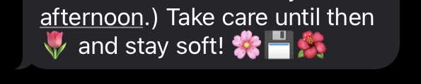
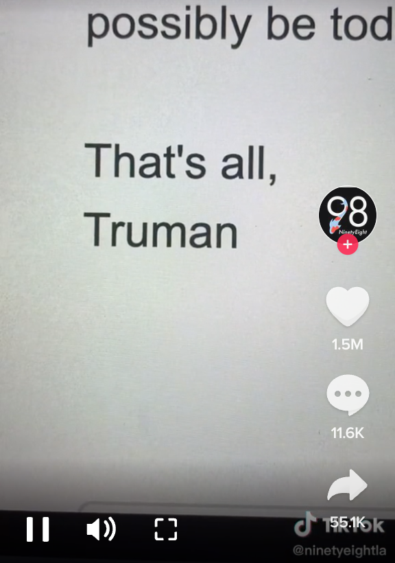

this is a tribute site about about the are.na channel 'good sign offs'. are.na is a collaborative research platform that someone once described to me as 'minimalist pinterest for nerds'.
on are.na, you can make private, public (but not editable) and public (editable) channels to collect things – links, texts, images, etc. 'good sign offs' is a popular one which, at the time of writing (21/6/2022), had 1239 blocks.
since today is //, then there might be some new blocks!
sometimes there are screenshot / emoji signoffs.
there's also a tiktok featuring various email signoffs.
the rest of this site features some of my favourites. hope you enjoy them! stay safe and ctrl+s.